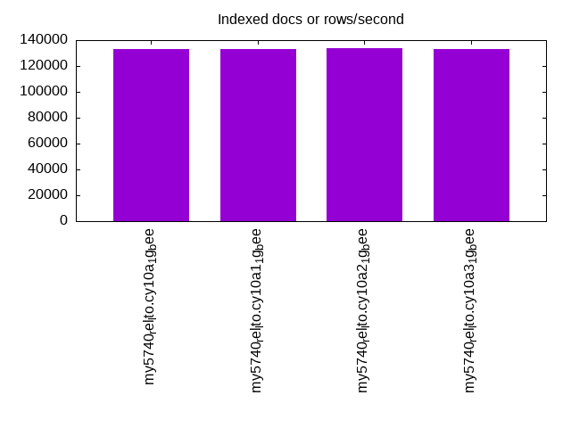
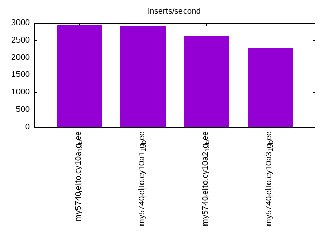
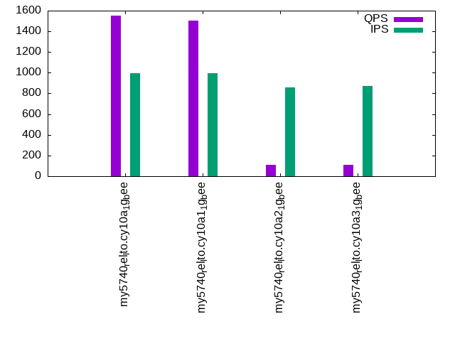

Introduction
This is a report for the insert benchmark with 20M docs and 1 client(s). It is generated by scripts (bash, awk, sed) and Tufte might not be impressed. An overview of the insert benchmark is here and a short update is here. Below, by DBMS, I mean DBMS+version.config. An example is my8020.c10b40 where my means MySQL, 8020 is version 8.0.20 and c10b40 is the name for the configuration file.
The test server has 8 AMD cores, 16G RAM and an NVMe SSD. It is described here as the Beelink. The benchmark was run with 1 client and there were 1 or 3 connections per client (1 for queries or inserts without rate limits, 1+1 for rate limited inserts+deletes). There is 1 table. It loads 20M rows without secondary indexes, creates secondary indexes, then inserts 50M rows with a delete per insert to avoid growing the table. It then does 3 read+write tests for 3600s each that do queries as fast as possible with 100, 500 and then 1000 inserts/second/client concurrent with the queries and 1000 deletes/second to avoid growing the table. The database is cached by the OS but not by InnoDB.
The tested DBMS are:
- my5740_rel_lto.cy10a_1g_bee - InnoDB and MySQL 5.7.40, rel_lto build, cy10a_1g_bee config, compiled with CMAKE_BUILD_TYPE=Release, base config
- my5740_rel_lto.cy10a1_1g_bee - InnoDB and MySQL 5.7.40, rel_lto build, cy10a1_1g_bee config, compiled with CMAKE_BUILD_TYPE=Release, adds innodb_use_native_aio=off
- my5740_rel_lto.cy10a2_1g_bee - InnoDB and MySQL 5.7.40, rel_lto build, cy10a2_1g_bee config, compiled with CMAKE_BUILD_TYPE=Release, adds innodb_io_capacity=20k, innodb_io_capacity_max=40k
- my5740_rel_lto.cy10a3_1g_bee - InnoDB and MySQL 5.7.40, rel_lto build, cy10a3_1g_bee config, compiled with CMAKE_BUILD_TYPE=Release, adds innodb_io_capacity=20k, innodb_io_capacity_max=40k, innodb_flush_sync=OFF
Contents
- Summary
- l.i0: load without secondary indexes
- l.x: create secondary indexes
- l.i1: continue load after secondary indexes created
- q100.1: range queries with 100 insert/s per client
- q500.1: range queries with 500 insert/s per client
- q1000.1: range queries with 1000 insert/s per client
Summary
The numbers are inserts/s for l.i0 and l.i1, indexed docs (or rows) /s for l.x and queries/s for q100, q500, q1000. The values are the average rate over the entire test for inserts (IPS) and queries (QPS). The range of values for IPS and QPS is split into 3 parts: bottom 25%, middle 50%, top 25%. Values in the bottom 25% have a red background, values in the top 25% have a green background and values in the middle have no color. A gray background is used for values that can be ignored because the DBMS did not sustain the target insert rate. Red backgrounds are not used when the minimum value is within 80% of the max value.
| dbms | l.i0 | l.x | l.i1 | q100.1 | q500.1 | q1000.1 |
|---|---|---|---|---|---|---|
| my5740_rel_lto.cy10a_1g_bee | 76046 | 133112 | 2954 | 877 | 2066 | 1550 |
| my5740_rel_lto.cy10a1_1g_bee | 74349 | 133112 | 2932 | 944 | 2053 | 1507 |
| my5740_rel_lto.cy10a2_1g_bee | 76336 | 134000 | 2609 | 203 | 126 | 111 |
| my5740_rel_lto.cy10a3_1g_bee | 75472 | 133112 | 2274 | 198 | 129 | 112 |
This table has relative throughput, throughput for the DBMS relative to the DBMS in the first line, using the absolute throughput from the previous table. Values less than 0.95 have a yellow background. Values greater than 1.05 have a blue background.
| dbms | l.i0 | l.x | l.i1 | q100.1 | q500.1 | q1000.1 |
|---|---|---|---|---|---|---|
| my5740_rel_lto.cy10a_1g_bee | 1.00 | 1.00 | 1.00 | 1.00 | 1.00 | 1.00 |
| my5740_rel_lto.cy10a1_1g_bee | 0.98 | 1.00 | 0.99 | 1.08 | 0.99 | 0.97 |
| my5740_rel_lto.cy10a2_1g_bee | 1.00 | 1.01 | 0.88 | 0.23 | 0.06 | 0.07 |
| my5740_rel_lto.cy10a3_1g_bee | 0.99 | 1.00 | 0.77 | 0.23 | 0.06 | 0.07 |
This lists the average rate of inserts/s for the tests that do inserts concurrent with queries. For such tests the query rate is listed in the table above. The read+write tests are setup so that the insert rate should match the target rate every second. Cells that are not at least 95% of the target have a red background to indicate a failure to satisfy the target.
| dbms | q100.1 | q500.1 | q1000.1 |
|---|---|---|---|
| my5740_rel_lto.cy10a_1g_bee | 99 | 499 | 999 |
| my5740_rel_lto.cy10a1_1g_bee | 99 | 499 | 998 |
| my5740_rel_lto.cy10a2_1g_bee | 98 | 465 | 856 |
| my5740_rel_lto.cy10a3_1g_bee | 98 | 474 | 871 |
| target | 100 | 500 | 1000 |
l.i0
l.i0: load without secondary indexes. Graphs for performance per 1-second interval are here.
Average throughput:
Insert response time histogram: each cell has the percentage of responses that take <= the time in the header and max is the max response time in seconds. For the max column values in the top 25% of the range have a red background and in the bottom 25% of the range have a green background. The red background is not used when the min value is within 80% of the max value.
| dbms | 256us | 1ms | 4ms | 16ms | 64ms | 256ms | 1s | 4s | 16s | gt | max |
|---|---|---|---|---|---|---|---|---|---|---|---|
| my5740_rel_lto.cy10a_1g_bee | 3.331 | 94.900 | 1.619 | 0.148 | 0.001 | 0.081 | |||||
| my5740_rel_lto.cy10a1_1g_bee | 3.260 | 94.976 | 1.602 | 0.160 | 0.003 | 0.081 | |||||
| my5740_rel_lto.cy10a2_1g_bee | 3.162 | 95.081 | 1.603 | 0.153 | 0.001 | 0.077 | |||||
| my5740_rel_lto.cy10a3_1g_bee | 3.735 | 94.468 | 1.638 | 0.157 | 0.003 | 0.078 |
Performance metrics for the DBMS listed above. Some are normalized by throughput, others are not. Legend for results is here.
ips qps rps rmbps wps wmbps rpq rkbpq wpi wkbpi csps cpups cspq cpupq dbgb1 dbgb2 rss maxop p50 p99 tag 76046 0 0 0.0 104.9 21.5 0.000 0.000 0.001 0.290 7801 20.1 0.103 21 1.3 41.8 1.1 0.081 75912 58023 20m.my5740_rel_lto.cy10a_1g_bee 74349 0 0 0.0 102.3 21.2 0.000 0.000 0.001 0.292 7536 20.0 0.101 22 1.3 41.8 1.1 0.081 74948 44849 20m.my5740_rel_lto.cy10a1_1g_bee 76336 0 0 0.0 104.7 21.6 0.000 0.000 0.001 0.290 7817 20.1 0.102 21 1.3 41.8 1.1 0.077 76608 49446 20m.my5740_rel_lto.cy10a2_1g_bee 75472 0 0 0.0 105.2 21.5 0.000 0.000 0.001 0.291 7789 19.8 0.103 21 1.3 41.8 1.1 0.078 75924 47066 20m.my5740_rel_lto.cy10a3_1g_bee
l.x
l.x: create secondary indexes.
Average throughput:
Performance metrics for the DBMS listed above. Some are normalized by throughput, others are not. Legend for results is here.
ips qps rps rmbps wps wmbps rpq rkbpq wpi wkbpi csps cpups cspq cpupq dbgb1 dbgb2 rss maxop p50 p99 tag 133112 0 0 0.0 331.1 118.6 0.000 0.000 0.002 0.913 5512 11.4 0.041 7 3.0 43.5 1.3 0.013 NA NA 20m.my5740_rel_lto.cy10a_1g_bee 133112 0 0 0.0 325.2 118.3 0.000 0.000 0.002 0.910 8410 11.8 0.063 7 3.0 43.5 1.3 0.019 NA NA 20m.my5740_rel_lto.cy10a1_1g_bee 134000 0 0 0.0 317.5 119.7 0.000 0.000 0.002 0.914 5486 11.6 0.041 7 3.0 43.5 1.3 0.015 NA NA 20m.my5740_rel_lto.cy10a2_1g_bee 133112 0 0 0.0 318.9 118.6 0.000 0.000 0.002 0.912 5504 11.3 0.041 7 3.0 43.5 1.3 0.018 NA NA 20m.my5740_rel_lto.cy10a3_1g_bee
l.i1
l.i1: continue load after secondary indexes created. Graphs for performance per 1-second interval are here.
Average throughput:
Insert response time histogram: each cell has the percentage of responses that take <= the time in the header and max is the max response time in seconds. For the max column values in the top 25% of the range have a red background and in the bottom 25% of the range have a green background. The red background is not used when the min value is within 80% of the max value.
| dbms | 256us | 1ms | 4ms | 16ms | 64ms | 256ms | 1s | 4s | 16s | gt | max |
|---|---|---|---|---|---|---|---|---|---|---|---|
| my5740_rel_lto.cy10a_1g_bee | 5.871 | 62.870 | 28.940 | 2.100 | 0.217 | 0.002 | 1.382 | ||||
| my5740_rel_lto.cy10a1_1g_bee | 6.005 | 61.380 | 30.118 | 2.312 | 0.186 | 0.986 | |||||
| my5740_rel_lto.cy10a2_1g_bee | 3.975 | 61.759 | 30.301 | 3.696 | 0.264 | 0.006 | 1.466 | ||||
| my5740_rel_lto.cy10a3_1g_bee | 2.551 | 58.014 | 33.485 | 5.617 | 0.320 | 0.014 | 1.352 |
Delete response time histogram: each cell has the percentage of responses that take <= the time in the header and max is the max response time in seconds. For the max column values in the top 25% of the range have a red background and in the bottom 25% of the range have a green background. The red background is not used when the min value is within 80% of the max value.
| dbms | 256us | 1ms | 4ms | 16ms | 64ms | 256ms | 1s | 4s | 16s | gt | max |
|---|---|---|---|---|---|---|---|---|---|---|---|
| my5740_rel_lto.cy10a_1g_bee | 11.511 | 62.262 | 25.017 | 1.209 | 0.001 | 0.310 | |||||
| my5740_rel_lto.cy10a1_1g_bee | 11.562 | 60.928 | 25.988 | 1.520 | 0.002 | 0.711 | |||||
| my5740_rel_lto.cy10a2_1g_bee | 9.613 | 60.969 | 26.771 | 2.623 | 0.023 | 0.001 | 1.025 | ||||
| my5740_rel_lto.cy10a3_1g_bee | 9.231 | 56.494 | 29.910 | 4.325 | 0.037 | 0.003 | 1.392 |
Performance metrics for the DBMS listed above. Some are normalized by throughput, others are not. Legend for results is here.
ips qps rps rmbps wps wmbps rpq rkbpq wpi wkbpi csps cpups cspq cpupq dbgb1 dbgb2 rss maxop p50 p99 tag 2954 0 3 0.2 4669.8 149.3 0.001 0.058 1.581 51.760 13149 18.8 4.451 509 4.7 45.4 1.3 1.382 2997 300 20m.my5740_rel_lto.cy10a_1g_bee 2932 0 3 0.2 4530.4 145.4 0.001 0.057 1.545 50.767 12837 19.2 4.377 524 4.7 45.4 1.3 0.986 2946 300 20m.my5740_rel_lto.cy10a1_1g_bee 2609 0 3 0.1 4265.2 136.1 0.001 0.057 1.635 53.432 12062 16.4 4.623 503 4.7 45.4 1.3 1.466 2747 100 20m.my5740_rel_lto.cy10a2_1g_bee 2274 0 2 0.1 3697.4 117.6 0.001 0.057 1.626 52.974 10580 14.2 4.652 500 4.8 45.4 1.3 1.352 2348 100 20m.my5740_rel_lto.cy10a3_1g_bee
q100.1
q100.1: range queries with 100 insert/s per client. Graphs for performance per 1-second interval are here.
Average throughput:
Query response time histogram: each cell has the percentage of responses that take <= the time in the header and max is the max response time in seconds. For max values in the top 25% of the range have a red background and in the bottom 25% of the range have a green background. The red background is not used when the min value is within 80% of the max value.
| dbms | 256us | 1ms | 4ms | 16ms | 64ms | 256ms | 1s | 4s | 16s | gt | max |
|---|---|---|---|---|---|---|---|---|---|---|---|
| my5740_rel_lto.cy10a_1g_bee | 21.504 | 75.497 | 0.151 | 1.572 | 0.968 | 0.306 | 0.003 | 0.388 | |||
| my5740_rel_lto.cy10a1_1g_bee | 21.558 | 75.174 | 0.558 | 1.628 | 0.814 | 0.265 | 0.003 | 0.463 | |||
| my5740_rel_lto.cy10a2_1g_bee | 5.950 | 84.056 | 0.280 | 3.387 | 4.321 | 1.935 | 0.071 | nonzero | 1.273 | ||
| my5740_rel_lto.cy10a3_1g_bee | 5.414 | 84.375 | 0.312 | 3.429 | 4.402 | 1.991 | 0.075 | 0.849 |
Insert response time histogram: each cell has the percentage of responses that take <= the time in the header and max is the max response time in seconds. For max values in the top 25% of the range have a red background and in the bottom 25% of the range have a green background. The red background is not used when the min value is within 80% of the max value.
| dbms | 256us | 1ms | 4ms | 16ms | 64ms | 256ms | 1s | 4s | 16s | gt | max |
|---|---|---|---|---|---|---|---|---|---|---|---|
| my5740_rel_lto.cy10a_1g_bee | 13.958 | 31.417 | 19.903 | 24.931 | 9.694 | 0.097 | 1.316 | ||||
| my5740_rel_lto.cy10a1_1g_bee | 12.056 | 37.361 | 20.264 | 22.972 | 7.278 | 0.069 | 1.430 | ||||
| my5740_rel_lto.cy10a2_1g_bee | 18.153 | 16.236 | 26.389 | 31.167 | 7.931 | 0.125 | 1.412 | ||||
| my5740_rel_lto.cy10a3_1g_bee | 20.069 | 16.236 | 26.611 | 30.931 | 6.125 | 0.028 | 1.216 |
Delete response time histogram: each cell has the percentage of responses that take <= the time in the header and max is the max response time in seconds. For max values in the top 25% of the range have a red background and in the bottom 25% of the range have a green background. The red background is not used when the min value is within 80% of the max value.
| dbms | 256us | 1ms | 4ms | 16ms | 64ms | 256ms | 1s | 4s | 16s | gt | max |
|---|---|---|---|---|---|---|---|---|---|---|---|
| my5740_rel_lto.cy10a_1g_bee | 43.958 | 20.347 | 25.903 | 9.694 | 0.097 | 0.550 | |||||
| my5740_rel_lto.cy10a1_1g_bee | 42.333 | 23.833 | 24.556 | 9.167 | 0.111 | 0.389 | |||||
| my5740_rel_lto.cy10a2_1g_bee | 38.625 | 20.736 | 28.181 | 12.153 | 0.306 | 0.479 | |||||
| my5740_rel_lto.cy10a3_1g_bee | 38.417 | 20.000 | 27.944 | 13.167 | 0.472 | 0.488 |
Performance metrics for the DBMS listed above. Some are normalized by throughput, others are not. Legend for results is here.
ips qps rps rmbps wps wmbps rpq rkbpq wpi wkbpi csps cpups cspq cpupq dbgb1 dbgb2 rss maxop p50 p99 tag 99 877 1 0.0 2885.8 82.3 0.001 0.022 29.150 850.843 11871 8.5 13.538 775 4.7 45.4 1.3 0.388 367 32 20m.my5740_rel_lto.cy10a_1g_bee 99 944 1 0.0 2989.9 85.8 0.001 0.018 30.171 886.827 11995 9.5 12.701 805 4.7 45.4 1.3 0.463 400 32 20m.my5740_rel_lto.cy10a1_1g_bee 98 203 1 0.0 2541.6 71.9 0.005 0.099 25.856 748.931 8381 5.3 41.349 2092 4.7 45.4 1.3 1.273 224 16 20m.my5740_rel_lto.cy10a2_1g_bee 98 198 0 0.0 2522.3 71.3 0.002 0.054 25.633 741.936 8258 5.2 41.727 2102 4.8 45.4 1.3 0.849 224 16 20m.my5740_rel_lto.cy10a3_1g_bee
q500.1
q500.1: range queries with 500 insert/s per client. Graphs for performance per 1-second interval are here.
Average throughput:

Query response time histogram: each cell has the percentage of responses that take <= the time in the header and max is the max response time in seconds. For max values in the top 25% of the range have a red background and in the bottom 25% of the range have a green background. The red background is not used when the min value is within 80% of the max value.
| dbms | 256us | 1ms | 4ms | 16ms | 64ms | 256ms | 1s | 4s | 16s | gt | max |
|---|---|---|---|---|---|---|---|---|---|---|---|
| my5740_rel_lto.cy10a_1g_bee | 22.930 | 75.466 | 0.051 | 1.479 | 0.068 | 0.007 | 0.200 | ||||
| my5740_rel_lto.cy10a1_1g_bee | 22.898 | 75.368 | 0.182 | 1.479 | 0.066 | 0.008 | nonzero | 0.273 | |||
| my5740_rel_lto.cy10a2_1g_bee | 2.522 | 82.841 | 1.353 | 4.322 | 5.185 | 3.552 | 0.225 | 0.804 | |||
| my5740_rel_lto.cy10a3_1g_bee | 2.548 | 82.995 | 1.299 | 4.289 | 5.196 | 3.460 | 0.212 | 0.997 |
Insert response time histogram: each cell has the percentage of responses that take <= the time in the header and max is the max response time in seconds. For max values in the top 25% of the range have a red background and in the bottom 25% of the range have a green background. The red background is not used when the min value is within 80% of the max value.
| dbms | 256us | 1ms | 4ms | 16ms | 64ms | 256ms | 1s | 4s | 16s | gt | max |
|---|---|---|---|---|---|---|---|---|---|---|---|
| my5740_rel_lto.cy10a_1g_bee | 47.978 | 46.603 | 4.514 | 0.889 | 0.017 | 0.336 | |||||
| my5740_rel_lto.cy10a1_1g_bee | 45.039 | 50.200 | 3.911 | 0.839 | 0.011 | 0.292 | |||||
| my5740_rel_lto.cy10a2_1g_bee | 16.939 | 24.000 | 23.711 | 28.108 | 7.233 | 0.008 | 1.148 | ||||
| my5740_rel_lto.cy10a3_1g_bee | 19.214 | 21.644 | 24.439 | 28.425 | 6.269 | 0.008 | 1.222 |
Delete response time histogram: each cell has the percentage of responses that take <= the time in the header and max is the max response time in seconds. For max values in the top 25% of the range have a red background and in the bottom 25% of the range have a green background. The red background is not used when the min value is within 80% of the max value.
| dbms | 256us | 1ms | 4ms | 16ms | 64ms | 256ms | 1s | 4s | 16s | gt | max |
|---|---|---|---|---|---|---|---|---|---|---|---|
| my5740_rel_lto.cy10a_1g_bee | 80.275 | 16.475 | 3.153 | 0.097 | 0.115 | ||||||
| my5740_rel_lto.cy10a1_1g_bee | 83.553 | 13.300 | 3.044 | 0.103 | 0.138 | ||||||
| my5740_rel_lto.cy10a2_1g_bee | 41.428 | 11.831 | 25.778 | 19.717 | 1.247 | 0.702 | |||||
| my5740_rel_lto.cy10a3_1g_bee | 41.247 | 11.794 | 25.633 | 20.103 | 1.222 | 0.868 |
Performance metrics for the DBMS listed above. Some are normalized by throughput, others are not. Legend for results is here.
ips qps rps rmbps wps wmbps rpq rkbpq wpi wkbpi csps cpups cspq cpupq dbgb1 dbgb2 rss maxop p50 p99 tag 499 2066 5 0.1 2896.2 86.7 0.003 0.043 5.803 177.975 15494 13.5 7.499 523 4.7 45.4 1.3 0.200 2157 863 20m.my5740_rel_lto.cy10a_1g_bee 499 2053 5 0.1 2886.9 86.6 0.003 0.044 5.785 177.618 15584 14.1 7.590 549 4.7 45.4 1.3 0.273 2126 847 20m.my5740_rel_lto.cy10a1_1g_bee 465 126 8 0.1 2130.2 61.4 0.062 1.014 4.579 135.164 7381 5.5 58.533 3489 4.7 45.4 1.3 0.804 96 0 20m.my5740_rel_lto.cy10a2_1g_bee 474 129 8 0.1 2157.0 62.3 0.060 0.984 4.548 134.609 7425 5.6 57.651 3478 4.8 45.4 1.3 0.997 112 0 20m.my5740_rel_lto.cy10a3_1g_bee
q1000.1
q1000.1: range queries with 1000 insert/s per client. Graphs for performance per 1-second interval are here.
Average throughput:
Query response time histogram: each cell has the percentage of responses that take <= the time in the header and max is the max response time in seconds. For max values in the top 25% of the range have a red background and in the bottom 25% of the range have a green background. The red background is not used when the min value is within 80% of the max value.
| dbms | 256us | 1ms | 4ms | 16ms | 64ms | 256ms | 1s | 4s | 16s | gt | max |
|---|---|---|---|---|---|---|---|---|---|---|---|
| my5740_rel_lto.cy10a_1g_bee | 15.736 | 81.280 | 0.207 | 2.620 | 0.138 | 0.019 | 0.226 | ||||
| my5740_rel_lto.cy10a1_1g_bee | 14.944 | 81.521 | 0.599 | 2.790 | 0.127 | 0.018 | 0.207 | ||||
| my5740_rel_lto.cy10a2_1g_bee | 1.455 | 79.320 | 4.760 | 5.004 | 4.978 | 4.224 | 0.259 | 0.823 | |||
| my5740_rel_lto.cy10a3_1g_bee | 1.532 | 79.355 | 4.785 | 4.931 | 4.973 | 4.168 | 0.257 | 0.958 |
Insert response time histogram: each cell has the percentage of responses that take <= the time in the header and max is the max response time in seconds. For max values in the top 25% of the range have a red background and in the bottom 25% of the range have a green background. The red background is not used when the min value is within 80% of the max value.
| dbms | 256us | 1ms | 4ms | 16ms | 64ms | 256ms | 1s | 4s | 16s | gt | max |
|---|---|---|---|---|---|---|---|---|---|---|---|
| my5740_rel_lto.cy10a_1g_bee | 36.514 | 55.122 | 7.300 | 1.038 | 0.026 | 0.496 | |||||
| my5740_rel_lto.cy10a1_1g_bee | 31.265 | 60.872 | 6.978 | 0.853 | 0.032 | 0.478 | |||||
| my5740_rel_lto.cy10a2_1g_bee | 23.178 | 27.239 | 24.363 | 23.328 | 1.893 | 0.893 | |||||
| my5740_rel_lto.cy10a3_1g_bee | 24.819 | 26.312 | 24.478 | 22.761 | 1.629 | 0.840 |
Delete response time histogram: each cell has the percentage of responses that take <= the time in the header and max is the max response time in seconds. For max values in the top 25% of the range have a red background and in the bottom 25% of the range have a green background. The red background is not used when the min value is within 80% of the max value.
| dbms | 256us | 1ms | 4ms | 16ms | 64ms | 256ms | 1s | 4s | 16s | gt | max |
|---|---|---|---|---|---|---|---|---|---|---|---|
| my5740_rel_lto.cy10a_1g_bee | 70.511 | 23.989 | 5.385 | 0.115 | 0.172 | ||||||
| my5740_rel_lto.cy10a1_1g_bee | 70.178 | 24.778 | 4.940 | 0.104 | 0.143 | ||||||
| my5740_rel_lto.cy10a2_1g_bee | 40.615 | 14.275 | 24.190 | 20.104 | 0.814 | 0.001 | 1.235 | ||||
| my5740_rel_lto.cy10a3_1g_bee | 40.242 | 14.507 | 24.449 | 20.028 | 0.775 | 0.894 |
Performance metrics for the DBMS listed above. Some are normalized by throughput, others are not. Legend for results is here.
ips qps rps rmbps wps wmbps rpq rkbpq wpi wkbpi csps cpups cspq cpupq dbgb1 dbgb2 rss maxop p50 p99 tag 999 1550 9 0.1 4503.3 135.8 0.006 0.089 4.510 139.250 17476 15.4 11.276 795 4.7 45.4 1.3 0.226 1598 352 20m.my5740_rel_lto.cy10a_1g_bee 998 1507 10 0.1 4485.1 135.2 0.006 0.094 4.495 138.758 17183 16.0 11.403 849 4.7 45.4 1.3 0.207 1550 511 20m.my5740_rel_lto.cy10a1_1g_bee 856 111 4 0.1 2019.1 58.5 0.040 0.638 2.360 70.009 6901 6.5 61.948 4668 4.7 45.4 1.3 0.823 48 0 20m.my5740_rel_lto.cy10a2_1g_bee 871 112 5 0.1 2021.9 58.6 0.041 0.651 2.320 68.874 6908 6.5 61.842 4655 4.8 45.4 1.3 0.958 48 0 20m.my5740_rel_lto.cy10a3_1g_bee
l.i0
l.i0: load without secondary indexes
Performance metrics for all DBMS, not just the ones listed above. Some are normalized by throughput, others are not. Legend for results is here.
ips qps rps rmbps wps wmbps rpq rkbpq wpi wkbpi csps cpups cspq cpupq dbgb1 dbgb2 rss maxop p50 p99 tag 76046 0 0 0.0 104.9 21.5 0.000 0.000 0.001 0.290 7801 20.1 0.103 21 1.3 41.8 1.1 0.081 75912 58023 20m.my5740_rel_lto.cy10a_1g_bee 74349 0 0 0.0 102.3 21.2 0.000 0.000 0.001 0.292 7536 20.0 0.101 22 1.3 41.8 1.1 0.081 74948 44849 20m.my5740_rel_lto.cy10a1_1g_bee 76336 0 0 0.0 104.7 21.6 0.000 0.000 0.001 0.290 7817 20.1 0.102 21 1.3 41.8 1.1 0.077 76608 49446 20m.my5740_rel_lto.cy10a2_1g_bee 75472 0 0 0.0 105.2 21.5 0.000 0.000 0.001 0.291 7789 19.8 0.103 21 1.3 41.8 1.1 0.078 75924 47066 20m.my5740_rel_lto.cy10a3_1g_bee
l.x
l.x: create secondary indexes
Performance metrics for all DBMS, not just the ones listed above. Some are normalized by throughput, others are not. Legend for results is here.
ips qps rps rmbps wps wmbps rpq rkbpq wpi wkbpi csps cpups cspq cpupq dbgb1 dbgb2 rss maxop p50 p99 tag 133112 0 0 0.0 331.1 118.6 0.000 0.000 0.002 0.913 5512 11.4 0.041 7 3.0 43.5 1.3 0.013 NA NA 20m.my5740_rel_lto.cy10a_1g_bee 133112 0 0 0.0 325.2 118.3 0.000 0.000 0.002 0.910 8410 11.8 0.063 7 3.0 43.5 1.3 0.019 NA NA 20m.my5740_rel_lto.cy10a1_1g_bee 134000 0 0 0.0 317.5 119.7 0.000 0.000 0.002 0.914 5486 11.6 0.041 7 3.0 43.5 1.3 0.015 NA NA 20m.my5740_rel_lto.cy10a2_1g_bee 133112 0 0 0.0 318.9 118.6 0.000 0.000 0.002 0.912 5504 11.3 0.041 7 3.0 43.5 1.3 0.018 NA NA 20m.my5740_rel_lto.cy10a3_1g_bee
l.i1
l.i1: continue load after secondary indexes created
Performance metrics for all DBMS, not just the ones listed above. Some are normalized by throughput, others are not. Legend for results is here.
ips qps rps rmbps wps wmbps rpq rkbpq wpi wkbpi csps cpups cspq cpupq dbgb1 dbgb2 rss maxop p50 p99 tag 2954 0 3 0.2 4669.8 149.3 0.001 0.058 1.581 51.760 13149 18.8 4.451 509 4.7 45.4 1.3 1.382 2997 300 20m.my5740_rel_lto.cy10a_1g_bee 2932 0 3 0.2 4530.4 145.4 0.001 0.057 1.545 50.767 12837 19.2 4.377 524 4.7 45.4 1.3 0.986 2946 300 20m.my5740_rel_lto.cy10a1_1g_bee 2609 0 3 0.1 4265.2 136.1 0.001 0.057 1.635 53.432 12062 16.4 4.623 503 4.7 45.4 1.3 1.466 2747 100 20m.my5740_rel_lto.cy10a2_1g_bee 2274 0 2 0.1 3697.4 117.6 0.001 0.057 1.626 52.974 10580 14.2 4.652 500 4.8 45.4 1.3 1.352 2348 100 20m.my5740_rel_lto.cy10a3_1g_bee
q100.1
q100.1: range queries with 100 insert/s per client
Performance metrics for all DBMS, not just the ones listed above. Some are normalized by throughput, others are not. Legend for results is here.
ips qps rps rmbps wps wmbps rpq rkbpq wpi wkbpi csps cpups cspq cpupq dbgb1 dbgb2 rss maxop p50 p99 tag 99 877 1 0.0 2885.8 82.3 0.001 0.022 29.150 850.843 11871 8.5 13.538 775 4.7 45.4 1.3 0.388 367 32 20m.my5740_rel_lto.cy10a_1g_bee 99 944 1 0.0 2989.9 85.8 0.001 0.018 30.171 886.827 11995 9.5 12.701 805 4.7 45.4 1.3 0.463 400 32 20m.my5740_rel_lto.cy10a1_1g_bee 98 203 1 0.0 2541.6 71.9 0.005 0.099 25.856 748.931 8381 5.3 41.349 2092 4.7 45.4 1.3 1.273 224 16 20m.my5740_rel_lto.cy10a2_1g_bee 98 198 0 0.0 2522.3 71.3 0.002 0.054 25.633 741.936 8258 5.2 41.727 2102 4.8 45.4 1.3 0.849 224 16 20m.my5740_rel_lto.cy10a3_1g_bee
q500.1
q500.1: range queries with 500 insert/s per client
Performance metrics for all DBMS, not just the ones listed above. Some are normalized by throughput, others are not. Legend for results is here.
ips qps rps rmbps wps wmbps rpq rkbpq wpi wkbpi csps cpups cspq cpupq dbgb1 dbgb2 rss maxop p50 p99 tag 499 2066 5 0.1 2896.2 86.7 0.003 0.043 5.803 177.975 15494 13.5 7.499 523 4.7 45.4 1.3 0.200 2157 863 20m.my5740_rel_lto.cy10a_1g_bee 499 2053 5 0.1 2886.9 86.6 0.003 0.044 5.785 177.618 15584 14.1 7.590 549 4.7 45.4 1.3 0.273 2126 847 20m.my5740_rel_lto.cy10a1_1g_bee 465 126 8 0.1 2130.2 61.4 0.062 1.014 4.579 135.164 7381 5.5 58.533 3489 4.7 45.4 1.3 0.804 96 0 20m.my5740_rel_lto.cy10a2_1g_bee 474 129 8 0.1 2157.0 62.3 0.060 0.984 4.548 134.609 7425 5.6 57.651 3478 4.8 45.4 1.3 0.997 112 0 20m.my5740_rel_lto.cy10a3_1g_bee
q1000.1
q1000.1: range queries with 1000 insert/s per client
Performance metrics for all DBMS, not just the ones listed above. Some are normalized by throughput, others are not. Legend for results is here.
ips qps rps rmbps wps wmbps rpq rkbpq wpi wkbpi csps cpups cspq cpupq dbgb1 dbgb2 rss maxop p50 p99 tag 999 1550 9 0.1 4503.3 135.8 0.006 0.089 4.510 139.250 17476 15.4 11.276 795 4.7 45.4 1.3 0.226 1598 352 20m.my5740_rel_lto.cy10a_1g_bee 998 1507 10 0.1 4485.1 135.2 0.006 0.094 4.495 138.758 17183 16.0 11.403 849 4.7 45.4 1.3 0.207 1550 511 20m.my5740_rel_lto.cy10a1_1g_bee 856 111 4 0.1 2019.1 58.5 0.040 0.638 2.360 70.009 6901 6.5 61.948 4668 4.7 45.4 1.3 0.823 48 0 20m.my5740_rel_lto.cy10a2_1g_bee 871 112 5 0.1 2021.9 58.6 0.041 0.651 2.320 68.874 6908 6.5 61.842 4655 4.8 45.4 1.3 0.958 48 0 20m.my5740_rel_lto.cy10a3_1g_bee
l.i0
- l.i0: load without secondary indexes
- Legend for results is here.
- Each entry lists the percentage of responses that fit in that bucket (slower than max time for previous bucket, faster than min time for next bucket).
Insert response time histogram
256us 1ms 4ms 16ms 64ms 256ms 1s 4s 16s gt max tag 0.000 3.331 94.900 1.619 0.148 0.001 0.000 0.000 0.000 0.000 0.081 my5740_rel_lto.cy10a_1g_bee 0.000 3.260 94.976 1.602 0.160 0.003 0.000 0.000 0.000 0.000 0.081 my5740_rel_lto.cy10a1_1g_bee 0.000 3.162 95.081 1.603 0.153 0.001 0.000 0.000 0.000 0.000 0.077 my5740_rel_lto.cy10a2_1g_bee 0.000 3.735 94.468 1.638 0.157 0.003 0.000 0.000 0.000 0.000 0.078 my5740_rel_lto.cy10a3_1g_bee
l.x
- l.x: create secondary indexes
- Legend for results is here.
- Each entry lists the percentage of responses that fit in that bucket (slower than max time for previous bucket, faster than min time for next bucket).
TODO - determine whether there is data for create index response time
l.i1
- l.i1: continue load after secondary indexes created
- Legend for results is here.
- Each entry lists the percentage of responses that fit in that bucket (slower than max time for previous bucket, faster than min time for next bucket).
Insert response time histogram
256us 1ms 4ms 16ms 64ms 256ms 1s 4s 16s gt max tag 0.000 0.000 5.871 62.870 28.940 2.100 0.217 0.002 0.000 0.000 1.382 my5740_rel_lto.cy10a_1g_bee 0.000 0.000 6.005 61.380 30.118 2.312 0.186 0.000 0.000 0.000 0.986 my5740_rel_lto.cy10a1_1g_bee 0.000 0.000 3.975 61.759 30.301 3.696 0.264 0.006 0.000 0.000 1.466 my5740_rel_lto.cy10a2_1g_bee 0.000 0.000 2.551 58.014 33.485 5.617 0.320 0.014 0.000 0.000 1.352 my5740_rel_lto.cy10a3_1g_bee
Delete response time histogram
256us 1ms 4ms 16ms 64ms 256ms 1s 4s 16s gt max tag 0.000 0.000 11.511 62.262 25.017 1.209 0.001 0.000 0.000 0.000 0.310 my5740_rel_lto.cy10a_1g_bee 0.000 0.000 11.562 60.928 25.988 1.520 0.002 0.000 0.000 0.000 0.711 my5740_rel_lto.cy10a1_1g_bee 0.000 0.000 9.613 60.969 26.771 2.623 0.023 0.001 0.000 0.000 1.025 my5740_rel_lto.cy10a2_1g_bee 0.000 0.000 9.231 56.494 29.910 4.325 0.037 0.003 0.000 0.000 1.392 my5740_rel_lto.cy10a3_1g_bee
q100.1
- q100.1: range queries with 100 insert/s per client
- Legend for results is here.
- Each entry lists the percentage of responses that fit in that bucket (slower than max time for previous bucket, faster than min time for next bucket).
Query response time histogram
256us 1ms 4ms 16ms 64ms 256ms 1s 4s 16s gt max tag 21.504 75.497 0.151 1.572 0.968 0.306 0.003 0.000 0.000 0.000 0.388 my5740_rel_lto.cy10a_1g_bee 21.558 75.174 0.558 1.628 0.814 0.265 0.003 0.000 0.000 0.000 0.463 my5740_rel_lto.cy10a1_1g_bee 5.950 84.056 0.280 3.387 4.321 1.935 0.071 nonzero 0.000 0.000 1.273 my5740_rel_lto.cy10a2_1g_bee 5.414 84.375 0.312 3.429 4.402 1.991 0.075 0.000 0.000 0.000 0.849 my5740_rel_lto.cy10a3_1g_bee
Insert response time histogram
256us 1ms 4ms 16ms 64ms 256ms 1s 4s 16s gt max tag 0.000 0.000 13.958 31.417 19.903 24.931 9.694 0.097 0.000 0.000 1.316 my5740_rel_lto.cy10a_1g_bee 0.000 0.000 12.056 37.361 20.264 22.972 7.278 0.069 0.000 0.000 1.430 my5740_rel_lto.cy10a1_1g_bee 0.000 0.000 18.153 16.236 26.389 31.167 7.931 0.125 0.000 0.000 1.412 my5740_rel_lto.cy10a2_1g_bee 0.000 0.000 20.069 16.236 26.611 30.931 6.125 0.028 0.000 0.000 1.216 my5740_rel_lto.cy10a3_1g_bee
Delete response time histogram
256us 1ms 4ms 16ms 64ms 256ms 1s 4s 16s gt max tag 0.000 0.000 43.958 20.347 25.903 9.694 0.097 0.000 0.000 0.000 0.550 my5740_rel_lto.cy10a_1g_bee 0.000 0.000 42.333 23.833 24.556 9.167 0.111 0.000 0.000 0.000 0.389 my5740_rel_lto.cy10a1_1g_bee 0.000 0.000 38.625 20.736 28.181 12.153 0.306 0.000 0.000 0.000 0.479 my5740_rel_lto.cy10a2_1g_bee 0.000 0.000 38.417 20.000 27.944 13.167 0.472 0.000 0.000 0.000 0.488 my5740_rel_lto.cy10a3_1g_bee
q500.1
- q500.1: range queries with 500 insert/s per client
- Legend for results is here.
- Each entry lists the percentage of responses that fit in that bucket (slower than max time for previous bucket, faster than min time for next bucket).
Query response time histogram
256us 1ms 4ms 16ms 64ms 256ms 1s 4s 16s gt max tag 22.930 75.466 0.051 1.479 0.068 0.007 0.000 0.000 0.000 0.000 0.200 my5740_rel_lto.cy10a_1g_bee 22.898 75.368 0.182 1.479 0.066 0.008 nonzero 0.000 0.000 0.000 0.273 my5740_rel_lto.cy10a1_1g_bee 2.522 82.841 1.353 4.322 5.185 3.552 0.225 0.000 0.000 0.000 0.804 my5740_rel_lto.cy10a2_1g_bee 2.548 82.995 1.299 4.289 5.196 3.460 0.212 0.000 0.000 0.000 0.997 my5740_rel_lto.cy10a3_1g_bee
Insert response time histogram
256us 1ms 4ms 16ms 64ms 256ms 1s 4s 16s gt max tag 0.000 0.000 47.978 46.603 4.514 0.889 0.017 0.000 0.000 0.000 0.336 my5740_rel_lto.cy10a_1g_bee 0.000 0.000 45.039 50.200 3.911 0.839 0.011 0.000 0.000 0.000 0.292 my5740_rel_lto.cy10a1_1g_bee 0.000 0.000 16.939 24.000 23.711 28.108 7.233 0.008 0.000 0.000 1.148 my5740_rel_lto.cy10a2_1g_bee 0.000 0.000 19.214 21.644 24.439 28.425 6.269 0.008 0.000 0.000 1.222 my5740_rel_lto.cy10a3_1g_bee
Delete response time histogram
256us 1ms 4ms 16ms 64ms 256ms 1s 4s 16s gt max tag 0.000 0.000 80.275 16.475 3.153 0.097 0.000 0.000 0.000 0.000 0.115 my5740_rel_lto.cy10a_1g_bee 0.000 0.000 83.553 13.300 3.044 0.103 0.000 0.000 0.000 0.000 0.138 my5740_rel_lto.cy10a1_1g_bee 0.000 0.000 41.428 11.831 25.778 19.717 1.247 0.000 0.000 0.000 0.702 my5740_rel_lto.cy10a2_1g_bee 0.000 0.000 41.247 11.794 25.633 20.103 1.222 0.000 0.000 0.000 0.868 my5740_rel_lto.cy10a3_1g_bee
q1000.1
- q1000.1: range queries with 1000 insert/s per client
- Legend for results is here.
- Each entry lists the percentage of responses that fit in that bucket (slower than max time for previous bucket, faster than min time for next bucket).
Query response time histogram
256us 1ms 4ms 16ms 64ms 256ms 1s 4s 16s gt max tag 15.736 81.280 0.207 2.620 0.138 0.019 0.000 0.000 0.000 0.000 0.226 my5740_rel_lto.cy10a_1g_bee 14.944 81.521 0.599 2.790 0.127 0.018 0.000 0.000 0.000 0.000 0.207 my5740_rel_lto.cy10a1_1g_bee 1.455 79.320 4.760 5.004 4.978 4.224 0.259 0.000 0.000 0.000 0.823 my5740_rel_lto.cy10a2_1g_bee 1.532 79.355 4.785 4.931 4.973 4.168 0.257 0.000 0.000 0.000 0.958 my5740_rel_lto.cy10a3_1g_bee
Insert response time histogram
256us 1ms 4ms 16ms 64ms 256ms 1s 4s 16s gt max tag 0.000 0.000 36.514 55.122 7.300 1.038 0.026 0.000 0.000 0.000 0.496 my5740_rel_lto.cy10a_1g_bee 0.000 0.000 31.265 60.872 6.978 0.853 0.032 0.000 0.000 0.000 0.478 my5740_rel_lto.cy10a1_1g_bee 0.000 0.000 23.178 27.239 24.363 23.328 1.893 0.000 0.000 0.000 0.893 my5740_rel_lto.cy10a2_1g_bee 0.000 0.000 24.819 26.312 24.478 22.761 1.629 0.000 0.000 0.000 0.840 my5740_rel_lto.cy10a3_1g_bee
Delete response time histogram
256us 1ms 4ms 16ms 64ms 256ms 1s 4s 16s gt max tag 0.000 0.000 70.511 23.989 5.385 0.115 0.000 0.000 0.000 0.000 0.172 my5740_rel_lto.cy10a_1g_bee 0.000 0.000 70.178 24.778 4.940 0.104 0.000 0.000 0.000 0.000 0.143 my5740_rel_lto.cy10a1_1g_bee 0.000 0.000 40.615 14.275 24.190 20.104 0.814 0.001 0.000 0.000 1.235 my5740_rel_lto.cy10a2_1g_bee 0.000 0.000 40.242 14.507 24.449 20.028 0.775 0.000 0.000 0.000 0.894 my5740_rel_lto.cy10a3_1g_bee